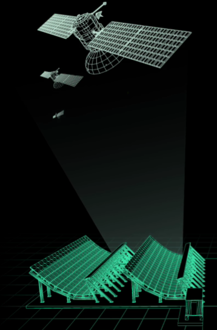

DEMOCRATIZANDO
A SEGURANÇA
ESPACIAL
Democratizando a segurança espacial
com código aberto para gestão
de tráfego e desvio de detritos orbitais

PRECISÃO PARA QUALQUER MISSÃO
Visibilidade Orbital em Tempo Real
A SEP rastreia milhares de detritos espaciais garantindo a segurança de satélites críticos
Alertas de Colisão Imediata
Sensores detectam aproximações perigosas e notificam os operadores em milissegundos
Relatórios de Sustentabilidade
Gere documentos automáticos sobre o uso da órbita garantindo conformidade com as normas internacionais

TECNOLOGIA DE PONTA

Inteligência em Python
Processamento de dados orbitais complexos utilizando bibliotecas de alta performance para cálculos de trajetória
Edge Computing com Arduino
Sensores conectados para monitoramento local e resposta rápida em dispositivos de baixo consumo de energia
NOSSO ECOSSISTEMA

Comunidade Aberta
Repositórios públicos para que desenvolvedores do mundo todo possam auditar e melhorar nossos algoritmos de segurança
Rede de Sensores
Integração com estações terrestres e satélites parceiros para criar um mapa de detritos cada vez mais denso e preciso
Facilidade no Ensino
Documentação simplificada para que estudantes e pesquisadores possam usar nossos dados em estudos sobre sustentabilidade espacial
SEP
Nossa Missão
A SEP (Soluções Espaciais Profissionais) nasceu da necessidade de tornar o espaço um lugar mais seguro para as futuras gerações visando ser a principal fonte de segurança orbital, somos um grupo focado em desenvolver soluções acessíveis para um problema que antes era restrito apenas a grandes agências espaciais, tornando o espaço um lugar mais seguro e acessível a todos
Desenvolvedores
- Lucas Kaoru
- Enrico Bertolacini
- Enzo Ecchile
- Lucas Octaviano
- Matheus Lemos